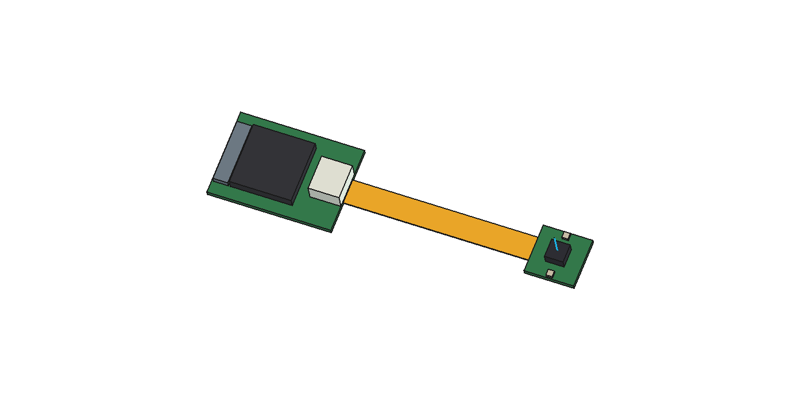
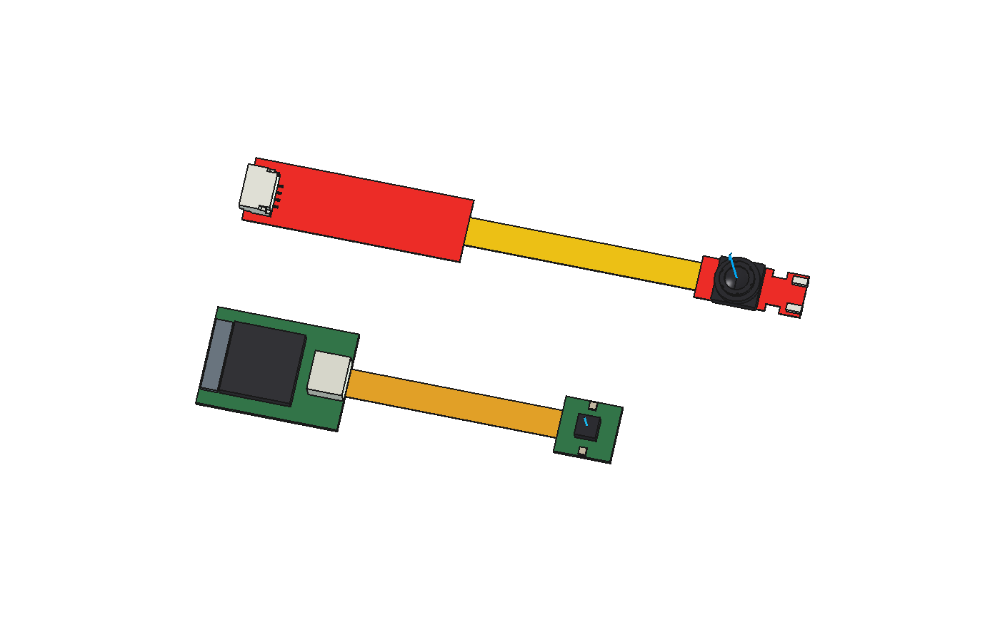

OC0TC-USB-CONCEPT-R02 / INFRARED REQUIREMENTS
Our target is indoor active near-infrared imaging: monochrome global shutter, visible-light suppression and nearby IR illuminators. Prefer factory-integrated optics and filtering, plus a supported receiver design.
Filtered OC0TC + IR LEDs → 30 mm MIPI flex → receiver / USB electronics → four-wire JST → external hub
Selected acquisition route: Leopard Imaging LI-OC0TC1B-MIPI + a vendor-confirmed USB receiver, cable and matching firmware. The camera module is listed at $99 on backorder; receiver and delivery are not included or confirmed.
The vendor specifies monochrome global shutter, 400 × 400, and 8–100 mm focus. That is a much closer fit to our eye-camera goal. Its sensor frame-rate rating does not prove the USB capture rate. The exact 940 nm filtering remains to be confirmed.
Actual camera module · Module datasheet
The connector pin map is now documented. We have not established a compatible USB receiver/firmware pair or placed an order. The ready-to-send request asks Leopard for the complete working set.
Unsent supplier request · 24-contact module interface
Fallbacks: Leopard LI-OV7251M-FF is a 6 × 6 mm head but specifies 80–150 mm focus. KLT-USB1A-OV7251 IR940 includes USB and LEDs but its 60 × 23.5 mm board is substantially larger. Neither is automatically a qualified substitute.
The images below are the preserved R02 packaging study. They are not measured geometry of the Leopard module. The new module connector data does not supply the bare OC0TC component footprint.
| Term | Meaning for our camera |
|---|---|
| IR-cut | Rejects infrared. Wrong for our intended illumination. |
| Visible-cut / IR-pass | Suppresses visible light and transmits the infrared we use. |
| NoIR | No IR-cut filter; does not by itself establish visible-light blocking. |
The requested spectral region is approximately 800–1000 nm. Our proposed low-effort baseline is 940 nm LEDs with a matching factory filter. A narrow passband around 940 nm is inside that region, but does not transmit the whole range; 850 nm compatibility must be checked separately.
The OC0TC brief claims a 940 nm lens coating to suppress outdoor sunlight. It gives no transmission curve, visible blocking level or bandwidth. We therefore treat OC0TC as a candidate awaiting IR qualification. OC0TC brief.
Our interpretation is that the coating may reject unwanted background wavelengths. A matched narrow-band filter can improve contrast under ambient lighting, including indoors, but ambient light inside its passband still reaches the sensor. This general principle does not establish OC0TC's actual coating type. Example of matched 940 nm filtering—not a filter selected for our tiny head.
For the exact monochrome variant: spectral transmission across roughly 400–1100 nm, visible rejection, 940 nm transmission, passband width/tolerance, angle dependence across the field of view, and close-focus performance. Prefer an existing factory NIR option over separate custom optics. Also request a supported USB evaluation/reference design.
The illuminator plan includes adjustable current limiting, hardware default-off control and provision for exposure synchronization. LED part, current, duty cycle, thermal load and eye-exposure qualification remain unset; the CAD LED blocks are allowances only.

| Item | Current definition |
|---|---|
| Variant candidate | OC0TC1B-RAVA-001A, monochrome |
| Module | Published height 1.7 mm; 3 × 3 mm XY allowance, actual XY unknown |
| Head / flex / main board | 8 × 8 mm / 30 × 4 mm / 20 × 14 mm allowances |
| Overall flat footprint | 58 × 14 mm; main board remains wider than the 10 mm goal |
Manufacturer product and variant listing.

Geometry validation passed. KiCad files remain architecture and placement drawings, with no guessed module pins or routed circuit. Full package/pinout, power sequencing, initialization and mode timing remain needed. CX3 is a receiver candidate, not a demonstrated OC0TC pairing. Physical fit, infrared filtering and working video remain unverified.
Current parameters: integration/r02/design.json. Infrared requirements: integration/infrared-requirements.json. The updated vendor information request is saved but unsent.